Design of experiments for Aspergillus awamori cellulase
A statistical optimization study of solid-state fermentation on agricultural waste: screening 11 variables, building a response surface, converting waste into sugar, and testing the enzyme on cotton.
Section 1 · Abstract
From a statistical design to a working enzyme
Background. Cellulases are expensive to make, and the cost of the enzyme is one of the main barriers to turning agricultural residue into sugars, fuels and textile finishes. Solid-state fermentation (SSF) of lignocellulosic waste is a low-cost route, but yield depends on many interacting process variables.
Methods. This study follows a sequential design-of-experiments strategy for SSF of Aspergillus awamori MK788209. A 12-run Plackett–Burman design (PBD) screened 11 variables. The two dominant variables, molokhia stem weight and incubation time, were carried into a 13-run rotatable central composite design (CCD) with a full quadratic response surface. A second three-factor CCD optimized saccharification of pea peels with the crude enzyme. Model quality was judged by ANOVA, R², adjusted R², predicted R² and residual diagnostics.
Results. Substrate weight (F = 99.5) and incubation time (F = 55.2) were the only variables beyond the Bonferroni limit in screening, lifting cellulase to 4.64 U/mL (2.51×). The CCD model (R² = 0.9878, adjusted 0.9792, predicted 0.9136) reached 9.00 U/mL, a 4.86-fold gain over the unoptimized condition, and showed a large substrate × time interaction that reverses the effect of incubation time depending on substrate loading. Pea peels were the best saccharification substrate (98.33 mg/mL), and CCD optimization raised the reported yield 3.44-fold to 338.18 mg/mL. The crude enzyme also biopolished, desized and improved the dyeability of cotton.
Conclusion. A small number of well-chosen experiments is enough to turn waste into a useful enzyme and then into sugar. This page also rebuilds the published models live from their design tables, so every coefficient, p-value and surface can be inspected and challenged.
Section 2 · Background and rationale
Why waste, why fungi, why designed experiments
Lignocellulose is abundant and under-used
Crop residues are made of cellulose, hemicellulose and lignin, typically in the ranges of 35 to 50%, 20 to 35% and 10 to 25% of dry mass. Cellulose is a linear polymer of β-1,4-linked glucose. Disposal by burning or dumping is an environmental problem, yet the same material is a sugar source and a growth substrate for enzyme-producing microbes [10].
The cellulase system
Cellulose is broken down by three cooperating activities. Endoglucanases (EC 3.2.1.4) cut internal β-1,4 bonds. Cellobiohydrolases (EC 3.2.1.91) work from chain ends and release cellobiose. β-Glucosidases (EC 3.2.1.21) convert cellobiose to glucose. The carboxymethyl-cellulose (CMC) assay used in this study reports mainly endoglucanase activity, so "cellulase activity" in the results is CMCase activity [7].
Solid-state fermentation
In SSF the fungus grows on a moist solid with little or no free water [11]. Filamentous fungi suit this environment because hyphae penetrate the substrate, and the waste serves as carbon source, inducer and support at once. The costs are heat and mass transfer, heterogeneity, and difficulty scaling, which is why the process variables need careful optimization.
Why design the experiments
Changing one factor at a time is slow and blind to interactions. A designed experiment varies all factors together according to a pattern that lets every effect be estimated independently, with far fewer runs.
| Question | Brute-force approach | Design used here | What it buys |
|---|---|---|---|
| Which of 11 two-level variables matter? | 211 = 2,048 runs (full factorial) | 12 runs (Plackett–Burman) | Unbiased main effects, orthogonal estimates |
| Curvature and interaction for 2 factors | 5 × 5 = 25 runs (five-level grid) | 13 runs (rotatable CCD, 5 centre points) | Full quadratic surface, interaction term, pure-error df |
| Does the effect of time depend on substrate? | Not estimable one factor at a time | Interaction term A×B | A sign reversal of the time effect, quantified in section 7 |
Section 3 · Study design
A sequential strategy, one question per stage
Each stage answers a narrower question than the one before and hands its result to the next. This is the classical screen, then optimize logic of response-surface methodology [3,5].
Substrate screening
Seven agricultural wastes compared for cellulase titre. Molokhia stem is the best.
7 substratesPlackett–Burman
Eleven nutrient and process variables screened. Two survive the Bonferroni limit.
11 factors · 12 runsCentral composite
Quadratic response surface for substrate weight and incubation time.
2 factors · 13 runsSaccharification
Pea peels hydrolyzed by the crude enzyme, then optimized with a second CCD.
3 factorsTextile trials
Biopolishing, desizing and dyeability tested on cotton twill and satin.
ApplicationCumulative gain in cellulase titre
The baseline of about 1.85 U/mL is derived from the reported fold changes (4.64 ÷ 2.51 and 9.00 ÷ 4.86 both give 1.85). Each stage added a measurable gain, and the CCD roughly doubled what screening alone had achieved.
Section 4 · Materials and methods
Strain, substrate, fermentation and assays
Substrates
Agricultural wastes were collected, cleaned, dried, ground and sieved. The screening figure reports rice straw (RS), onion peel (OP), lemon peel (LP), corn cob (CC), molokhia stem (MS, Corchorus olitorius), pea peel (PP) and one further waste labelled AL in the source.
Strain
Aspergillus awamori was isolated from pea peels on potato dextrose agar at 32 °C and identified by 18S rRNA gene sequencing (GenBank accession MK788209). Purity was checked by re-streaking and the culture was kept on PDA slants.
Solid-state fermentation
Each 250 mL flask held 2 g of dried substrate and 10 mL of distilled water, was autoclaved at 121 °C for 20 min, and was inoculated with 1 mL of a 5 × 107 spores/mL suspension from a 5-day-old culture. Flasks were incubated statically at 32 ± 2 °C. Enzyme was extracted by shaking with water and centrifuging.
Enzyme assays
Cellulase was assayed with 1% CMC in 0.05 M acetate buffer (pH 5.0) for 30 min at 50 °C, and the reducing sugar released was measured by the Somogyi method [8,9]. Xylanase, laccase, pectinase and amylase were assayed in the same study. One unit is the amount of enzyme releasing 1 µmol of glucose per minute.
Section 5 · Statistical framework
The mathematics behind each design
This section defines every quantity that later tables and plots report, so each number can be traced to a formula.
5.1 Coded variables
Factors are centred and scaled so that the low and high levels sit at −1 and +1. Coding makes coefficients comparable across factors measured in different units and keeps the model matrix well conditioned.
5.2 Plackett–Burman screening
A Plackett–Burman design is a two-level orthogonal array with N = 12 runs that can estimate up to N − 1 = 11 main effects [2]. Each effect is the difference between the mean response at the high and low levels. Its standard error depends only on the error variance and N, so every factor is tested with the same precision.
The Pareto chart ranks |t| and draws two reference lines. The t-value limit is the two-sided critical value t1−α/2, ν. The Bonferroni limit divides α by the number of simultaneous tests m = 11, giving t1−α/2m, ν, which controls the family-wise error rate. Effects above the Bonferroni line are very likely real, those between the lines are possibly real, and those below are indistinguishable from noise.
In the 12-run design each two-factor interaction is partially aliased (with coefficient ±1/3) with every main effect it does not contain. Screening results therefore assume interactions are small. That assumption is tested in the CCD, where the A×B interaction turns out to be the largest term in the model.
5.3 Central composite design and the quadratic model
A CCD augments a two-level factorial with axial (star) points at ±α and replicated centre points [3,4]. For k = 2 factors there are 22 = 4 factorial points, 2k = 4 axial points and n0 centre points. Choosing α = (2k)1/4 = √2 ≈ 1.414 makes the design rotatable, meaning prediction variance depends only on distance from the centre. With n0 = 5 the study has N = 13 runs, and the replicated centre points provide an estimate of pure error.
5.4 ANOVA and fit statistics
Total variation splits into regression and residual parts, and the residual splits again into lack of fit and pure error when replicates exist. Three R² variants guard against over-fitting: plain R² never falls when terms are added, adjusted R² penalizes terms, and predicted R² uses leave-one-out residuals (PRESS) to measure how well the model predicts runs it has not seen. Adjusted and predicted R² should agree within about 0.2.
n = runs, p = model parameters, ei = residual, hii = leverage. Adequate precision compares the range of fitted values with their average standard error, and values above 4 indicate a usable signal-to-noise ratio.
5.5 Canonical analysis of the surface
Writing the fitted surface as ŷ = b0 + xTb + xTBx, the stationary point is where the gradient vanishes. The signs of the eigenvalues of B classify it: all negative is a maximum, all positive a minimum, mixed signs a saddle, where no interior optimum exists [5].
Section 6 · Screening
Which substrate, and which variables matter?
6.1 Choosing the substrate
Cellulase production on each waste was compared before any optimization. Molokhia stem gave the highest titre, followed by AL, pea peel, rice straw, corn cob, lemon peel and onion peel. Molokhia stem was therefore used as the SSF substrate for all later optimization, while pea peel, the source of the fungus, became the substrate for the saccharification study.
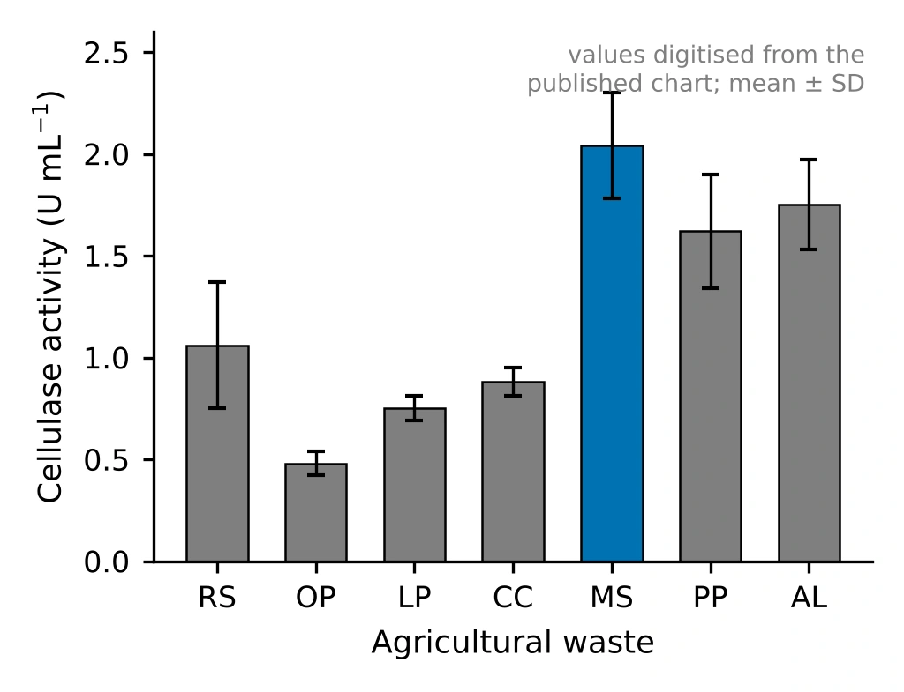
Show the original chart from the source article
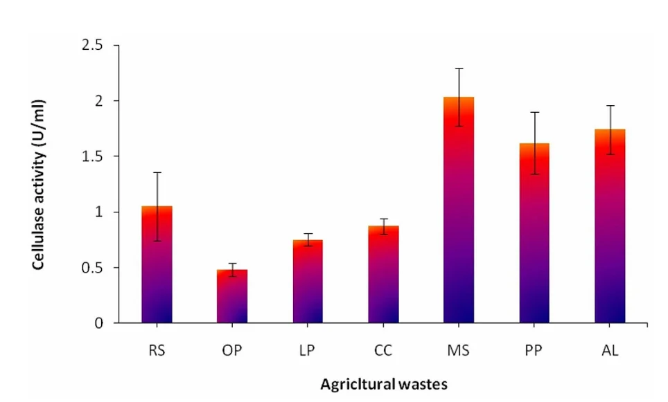
6.2 Plackett–Burman screening of 11 variables
Eleven variables were varied at two levels in 12 runs: substrate weight, incubation time, glucose, lactose, baker's yeast, peptone, ammonium sulfate, copper sulfate, iron sulfate, calcium chloride and potassium chloride. The panel below recomputes the analysis from the design table. Change the terms kept in the model to see how the error estimate, the limits and the p-values respond.
Interactive Plackett–Burman analysis
12 runs · 11 factors · live OLSPareto chart of |t| for each effect
| Factor | Low | High | Effect (U/mL) | Direction | |t| | p | Verdict |
|---|
| Source | Sum of squares | df | Mean square | F | p |
|---|
Design matrix and responses (12 runs)
Design matrix and responses from Table 1 of [1]. Factor levels: A 2/4 g per flask, B 4/7 days, C and D 0/10 g/L, E, F and G 0/1 g/L, H, J, K and L 0/0.01 g/L.
Reading the result
Substrate weight (A) and incubation time (B) are the only effects above the Bonferroni limit, and both are positive. Peptone (F) has a negative effect that clears the lower t-value limit narrowly but not the Bonferroni limit, and baker's yeast (E, also negative) falls just short of the lower limit. Both are suggestive rather than conclusive. Everything else is indistinguishable from noise at this sample size.
The best run (trial 12, 4 g substrate, 7 days) reached 4.64 U/mL. Because A and B were the only unambiguous drivers and the nutrient additions added little, the remaining variables could be held constant and the optimization effort concentrated on two factors.
How far to trust a saturated screen
With 12 runs and an 8-parameter model, only 4 degrees of freedom remain for error. The p-values for the two big effects are small enough to survive that, but the error estimate is itself uncertain, and choosing which terms to keep after looking at the data makes the reduced-model p-values optimistic. A Lenth pseudo-standard-error analysis [19] is a common alternative that avoids relying on a residual estimate at all.
Compare with the original Pareto chart from the source article
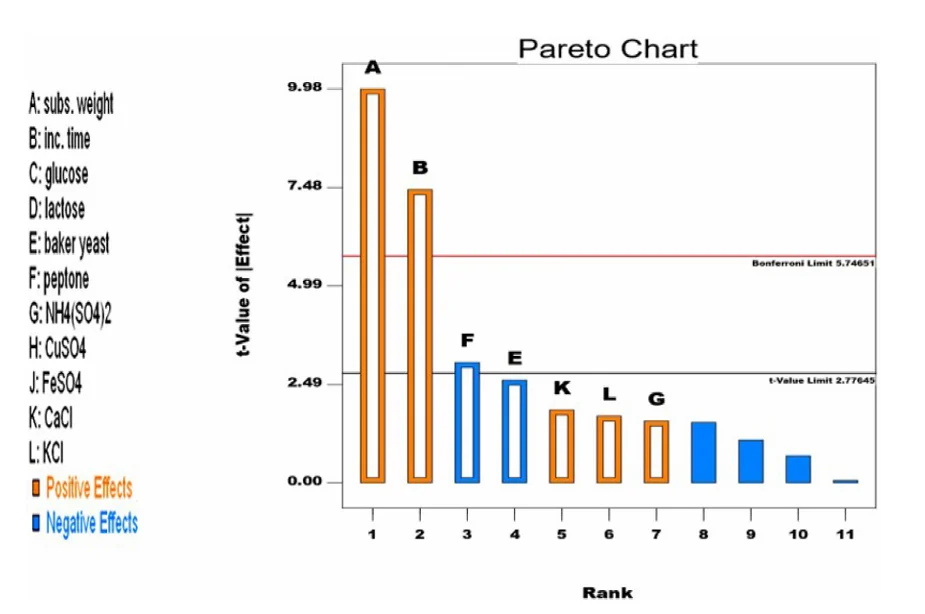
Section 7 · Response surface optimization
The cellulase response surface
The two factors identified by screening, molokhia stem weight (A, 4 to 8 g per flask at the ±1 levels) and incubation time (B, 7 to 12 days), were studied in a 13-run rotatable CCD. The panel below fits the quadratic model of equation (4) to the published responses. Drag the surface to rotate it, move the sliders to predict, and switch terms off to see what each one contributes.
Interactive response surface
13 runs · 2 factors · live OLS3-D response surface · drag to rotate
Contour map with design points
Open circles are the 13 design points (centre points overlap). The cross marks the slider position. The shaded ring on the contour map is the rotatable design region (radius √2 in coded units); predictions outside it are extrapolation.
7.1 The interaction changes the sign of the time effect
The coefficient of A×B (+1.34) is the largest in the model, larger than either main effect. Its consequence is easy to read from the interaction plot: at 4 g of substrate, longer incubation lowers the yield, while at 8 g it raises it. A one-factor-at-a-time study that tested time at a single substrate loading would have reached opposite conclusions depending on where it happened to start.
Interaction plot at the fitted model
7.2 Model coefficients and ANOVA
| Term | Coefficient | Std. error | 95% CI low | 95% CI high | t | p |
|---|
| Source | Sum of squares | df | Mean square | F | p |
|---|
The actual-unit equation is the coded model with xA = (g − 6)/2 and xB = (days − 9.5)/2.5 substituted and expanded, for use on the bench.
7.3 Canonical analysis: a saddle, and an optimum on the edge
7.4 Diagnostics
Three plots check the assumptions behind the inference. Points near the 45° line in the parity plot show the model reproduces the data. Residuals against fitted values should form a shapeless band, and studentized residuals should follow the normal reference line.
Predicted vs actual
Residuals vs predicted
Normal plot of studentized residuals
7.5 The design table
Design points and responses from Table 3 of [1]. The "published" column is the model prediction printed in that table. Run 2 prints B as 9.9 d in the source, but its coded level is 0 (9.5 d) and the published equation is reproduced only with the coded value, so the coded value is used here.
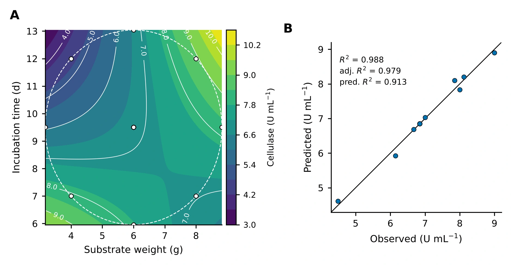
Compare with the original Design-Expert plots from the source article
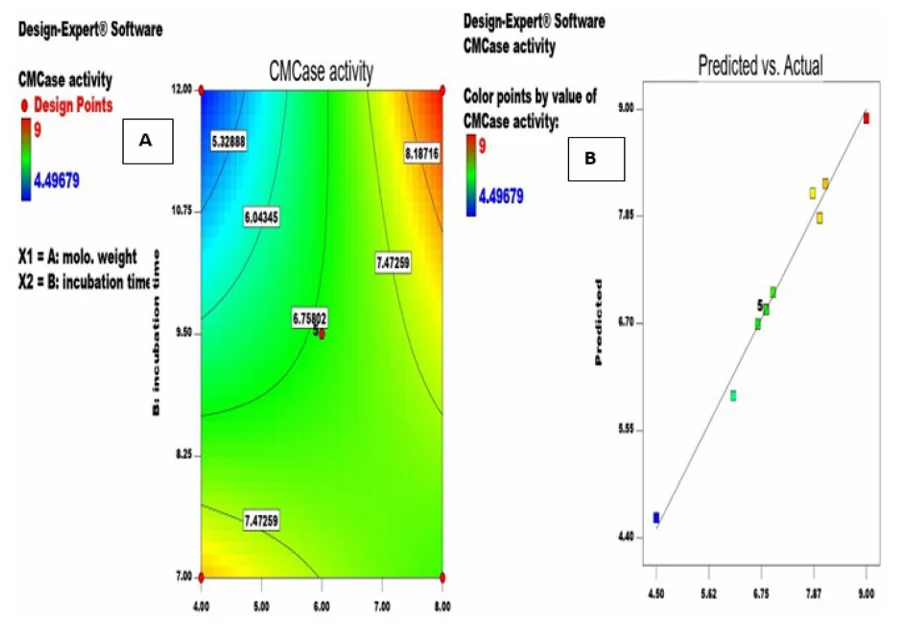
7.6 In-silico comparison of experimental strategies
Method. The fitted surface f(x) of section 7.2 is taken as the true response. A strategy spends a budget of N flasks, each returning y = f(x) + ε with ε ~ N(0, (kσ̂)2), where σ̂ = U/mL is the residual standard error of the CCD fit and k is a noise multiplier. The strategy then recommends a setting x̂ inside the square 4 to 8 g by 7 to 12 d, and performance is the relative yield S = f(x̂) / max f. Following good practice for simulation studies [25], each contest is repeated R = 500 times from a fixed random seed and summarized by the mean with a 95% Monte Carlo interval, the spread, and the probability of reaching 95% of the optimum.
- One factor at a time (OFAT). Half the flasks vary substrate at a held time, the best level is fixed, and the other half vary time.
- Full grid. ⌊√N⌋ levels per factor at the centre of equal cells, as a practical grid would be laid out. The best observed flask is recommended.
- CCD plus model. Four factorial, four axial and N − 8 centre flasks. A quadratic model is fitted by least squares and its predicted maximum is recommended.
Strategy simulator
Monte Carlo · R = 500 · seededOne simulated experiment on the true surface
Relative yield S over 500 repeats
Mean relative yield against flask budget (150 repeats per point, same noise and seed)
Figure 5. Top left, a single simulated experiment: dots are flasks, the orange ring is the recommendation, the white diamond is the best achievable setting. Top right and table, the distribution of S over 500 repeats. Bottom, the effect of budget. The CI column is the 95% Monte Carlo interval of the mean, ±1.96 SD/√R.
Reading the result. One factor at a time depends on where it starts. Because the substrate × time interaction reverses the effect of time, holding time at 7 days sends the search into the low-low corner, a good but lower region, whatever the budget. The grid spends flasks evenly and never tests the edge of the region where the best yield sits, so it improves only slowly with budget. The designed experiment places every flask where it helps estimate the whole surface and then reads the optimum from the model, which is why it leads at small budgets. Its advantage is robust to noise over the range offered: at four times the CCD residual error it still reaches about 99% of the optimum while the other two stay between 84% and 88%. Part of that robustness belongs to this surface, whose best setting is a corner fixed by a strong interaction term, so a flatter surface with an interior optimum would be a harder test. These are properties of the fitted surface and are shown as a demonstration of the principle, not as a new laboratory result.
7.7 Sequential search by hand, benchmarked
Task. Find the highest cellulase yield in 10 flasks. Each flask returns f(x) + ε with ε ~ N(0, σ̂2) from the fitted surface, and the surface stays hidden until you finish or reveal it. When the game ends, the page benchmarks your best observed yield against 400 simulated random-search players and 400 simulated designed experiments (a 10-flask CCD), and reports what a quadratic model fitted to your own flasks would have recommended.
Flask game
10 flasks · hidden surface · benchmarkedFlasks placed (colour = measured yield)
Lab notebook
Table 1 (generated at game end). The random-search benchmark places 10 flasks uniformly over the full slider range. The designed benchmark is a 10-flask CCD (four factorial, four axial, two centre flasks). Both report the best observed yield, the same quantity you are scored on. Settings beyond the explored square are model extrapolation, and a high score there would need confirmation in the laboratory.
7.8 Multi-objective trade-off analysis
Method. Three objectives are evaluated on the fitted surface over the square 4 to 8 g by 7 to 12 d: titre f, speed f/B (U/mL per day) and substrate efficiency f/A (U/mL per gram). Each is min-max normalized to [0, 1] across the square, and settings are ranked by the weighted sum S = Σ wk zk with Σ wk = 1, the simplest scalarization of a multi-objective problem [24]. The Pareto set contains every setting that no other setting beats on all three objectives at once. Derringer–Suich desirability functions [20] are the usual alternative when targets or tolerances are known.
Objective explorer
weighted-sum scalarization · Pareto setWeighted score S over the design square
Objective space: titre against speed
Figure 6. Left, weighted score over the square; ◇ peak corner (8 g, 12 d), □ fast alternative (4 g, 7 d), ring the optimum for the chosen weights. Right, every setting on a 0.05-coded-unit grid in objective space; blue points are Pareto-optimal over all three objectives (the plot shows two of them), grey points are dominated, and the ring marks the chosen optimum. Prediction intervals in the table are 95% intervals for a new flask from the CCD model.
Interpretation. The Pareto set is a thin ridge, not a cloud: improving speed or efficiency from the peak corner necessarily costs titre. The weighted-sum optimum is not a smooth function of the weights. It stays at the peak corner while titre carries enough weight and then jumps to the low-low corner at a critical weight, reported above for your current speed-to-efficiency ratio. Weighted sums can only reach Pareto points on the convex part of the front, so a compromise setting can be missed even when it is attractive. The weights encode priorities that the study did not measure, such as substrate price, reactor time and the value of a unit of enzyme, so the output is a decision aid and not an economic result.
7.9 Design your own experiment
Purpose. The designs above were fixed by the original study. This generator builds the run sheet for your own experiment: a central composite, Box–Behnken, two-level full factorial or 12-run Plackett–Burman design, with your factor names and ranges, a seeded random run order, and a CSV you can fill in at the bench and analyse with the models in this section.
Run-sheet generator
CCD · Box–Behnken · factorial · Plackett–BurmanCSV text (select and copy if the buttons are blocked)
Table 2. Run sheet for the chosen design. Coded units run from −1 (low) to +1 (high); a rotatable CCD adds axial runs at ±α beyond that range, so check the axial settings are physically possible before you start. The “Response” column is left empty for your measurements.
Reading the diagnostics. A quadratic model in k factors has (k+1)(k+2)/2 parameters; the error degrees of freedom are runs minus that number, and centre-point replicates supply the pure-error part used in the lack-of-fit test. Box–Behnken designs never place a run at a corner of the cube, which helps when the extreme combinations are unsafe or infeasible, at the price of not being able to extend a factorial sequentially.
7.10 How large an effect could 12 runs find? Power and detectable effect
Purpose. “Not significant” in a screening design is only informative if the design could have seen an effect of that size. For a two-level design with N runs the standard error of an effect is SE = 2σ/√N, and the test statistic t = E/SE is compared with the critical value t1−α/2,ν. If the true effect is δ, t follows a non-central t distribution with non-centrality λ = δ/SE, so power = P(|T′| > c) with T′ = (Z + λ)/√(V/ν), Z ~ N(0,1) and V ~ χ2ν. The panel evaluates this integral numerically in your browser and finds the smallest effect reached with 80% power.
Power and minimum detectable effect
non-central t · Plackett–Burman effectsPower against true effect size
Figure 7. Solid curve, Bonferroni-adjusted test over all screened factors (α/(N−1)); dashed, unadjusted test. Vertical marks are the estimated effects of the study (A, B, F, E); the 80% line crosses each curve at that test’s minimum detectable effect. The table gives the power the test would have had if the true effect equalled the estimate. That “observed power” is only a restatement of the p-value, so read it as a way to see the design’s resolution and not as evidence about the effect itself. σ defaults to the residual standard error of the 7-term screening model.
Interpretation. With the Bonferroni limit, 12 runs reliably detect only effects above roughly a fifth of the best titre, so the two large effects (A and B) are far inside the detectable range while peptone and baker’s yeast are not: if they were real at the size estimated, the test would have missed them most of the time. The honest reading of “not significant” for the nutrient additions is therefore “not shown to matter at this resolution”. Doubling the runs shrinks the detectable effect by roughly √2 through the standard error and a little more through the extra error degrees of freedom, which lower the critical value.
7.11 Analyse your own central composite design
Purpose. Everything above is computed live from the published data, and the same engine will analyse yours. Paste or upload a CSV with three columns (factor A, factor B, response) in natural units, one run per row. The panel fits the full quadratic model of equation (4), reports the ANOVA-level statistics, classifies the stationary point and finds the best setting inside your design region. The data never leave your browser.
Your data, the same model
quadratic RSM · runs locallyFitted surface over your design region
Note. Coding is x = (value − centre)/step with centre = (min + max)/2 and step = (max − min)/(2α) for each factor, so the design needs its axial runs present and α set correctly. The map covers the circle through your outermost runs (a rotatable design’s region); outside it the model is extrapolating. With fewer than 7 runs there is no error estimate, and a model this size needs the usual care: replicate the centre point, and confirm any optimum with fresh runs.
7.12 How stable is the model? Leave-one-out and bootstrap
Method. Thirteen runs support six parameters, so a single odd run can move the fit. Two checks are computed live. Leave-one-out: each run is removed in turn and the model refitted, reporting R², predicted R², the prediction at the peak corner (8 g, 12 d) and the stationary point. Residual bootstrap: residuals are rescaled by 1/√(1−hii), resampled with replacement, added to the fitted values and the model refitted B times with a seeded generator. The spread of the refitted predictions gives a distribution-free interval to compare with the textbook t interval, and the refits show how often the saddle and the high-substrate, long-time optimum survive.
Stability of the fitted surface
leave-one-out · residual bootstrapBootstrap distribution of the prediction at 8 g, 12 d
Figure 8. Left, bootstrap predictions at 8 g and 12 d; the shaded band is the 95% percentile interval and the dashed lines are the analytical 95% confidence interval for the mean from the t distribution. Right, leave-one-out refits: the row removed, the resulting R² and predicted R², the prediction at the peak corner and the stationary point. Removing one of the five identical centre runs changes little because the others carry the same information. The bootstrap assumes the residuals are exchangeable, which is least secure with only seven error degrees of freedom, so treat the interval as a robustness check on the t interval and not as a replacement for it.
Section 8 · Saccharification
Turning waste into fermentable sugar
The crude enzyme from the optimized fermentation was applied to the agricultural wastes themselves. Every substrate was hydrolyzed, and pea peels gave the highest reducing-sugar yield. Pea peels were then taken into a second, three-factor central composite design with pea peel weight, volume of culture filtrate and incubation time as factors.
Reducing sugar released, as reported
mg/mLUnoptimized hydrolysis of three substrates and the best run of the pea peel CCD (3.44-fold). Values as printed in the report and in [1].
The reported model
The published first-order model, in coded units, is the equation below. Its coefficients show which factor moves the response most per coded step.
A pea peel weight, B culture filtrate volume, C incubation time. Taken from [1].
| Statistic | Value |
|---|---|
| Model F-value | 79.79 (p < 0.0001) |
| Filtrate volume, F-value | 175.49 (p < 0.0001) |
| R² | 0.9373 |
| Adjusted R² | 0.9256 |
| Predicted R² | 0.8840 |
| Adjusted − predicted | 0.0416 (< 0.2, in agreement) |
Coefficients (coded units)
B is filtrate volume. Bars are drawn to one scale, so the length of each bar is its effect per coded unit.
Coded-unit calculator
Filtrate volume (B) dominates, and its coefficient is negative: within the range tested, adding more culture filtrate lowered the reported sugar concentration. Because the response is a concentration, dilution of the reaction mixture is one plausible contributor, alongside product inhibition and the enzyme-to-substrate ratio. The reported data cannot separate these explanations, and section 11 lists the experiments that would.
Section 9 · Textile applications
The same enzyme, a second market
Cellulases are used in textile finishing because they act on cotton's surface cellulose under mild conditions. The crude A. awamori enzyme was tested in three operations on cotton twill and satin: biopolishing, desizing and dyeing or printing.
Removes protruding microfibrils that cause fuzz and pilling. Treated fabrics showed a smoother surface, a higher whiteness index and better dye and pigment uptake.
Removes starch size before dyeing. Desized fabric lost 5.2% of its weight, had high wettability, and SEM showed no residual starch particles.
Enzyme-treated fabric took up more colour, with K/S 2.87 for dyed and 1.25 for printed samples. Washing and perspiration fastness were good to very good, and light fastness very good to excellent.
| Operation | Conditions | Reported outcome |
|---|---|---|
| Biopolishing | Acetate buffer, pH 6.0, liquor ratio 1:50, cellulase 20 mL/L, 50 °C, 45 min, ultrasonic bath | Smoother fibres, improved whiteness and dye uptake |
| Desizing | Enzyme 30 mL/L, NaClO2 5 g/L, wetting agent 1 g/L, liquor ratio 1:30, 60 °C, 30 min | 5.2% weight loss, whiteness 61, starch removed |
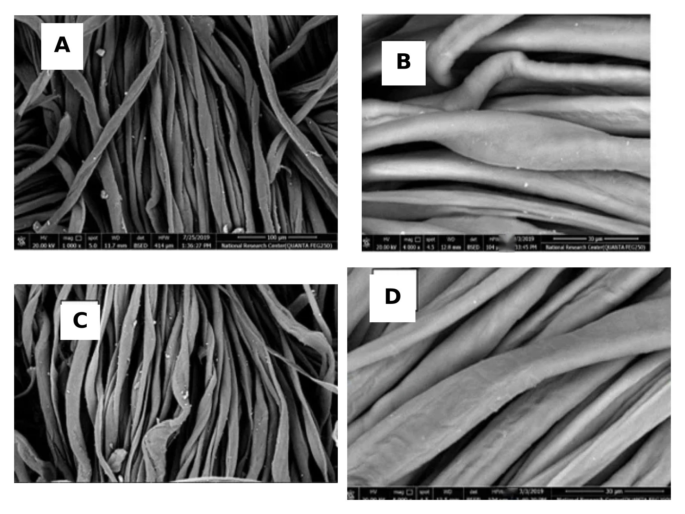
Quantifying colour with K/S
Colour strength is measured from reflectance with the Kubelka–Munk function, which is proportional to the dye concentration in the fabric [18]. A higher K/S at the same dye bath means more dye was taken up, which is why K/S is the headline metric for dyeability.
R∞ is the reflectance of an opaque sample at the wavelength of maximum absorption.
Section 10 · Poster and modelling toolkit
Five statistical models, one poster
The project poster surveys five modelling approaches used in design of experiments, each shown with outputs from statistical software. They go beyond the polynomial response surface used in section 7 and cover binary responses, batch effects, non-polynomial surfaces and time-to-event data. Select the poster to enlarge it.
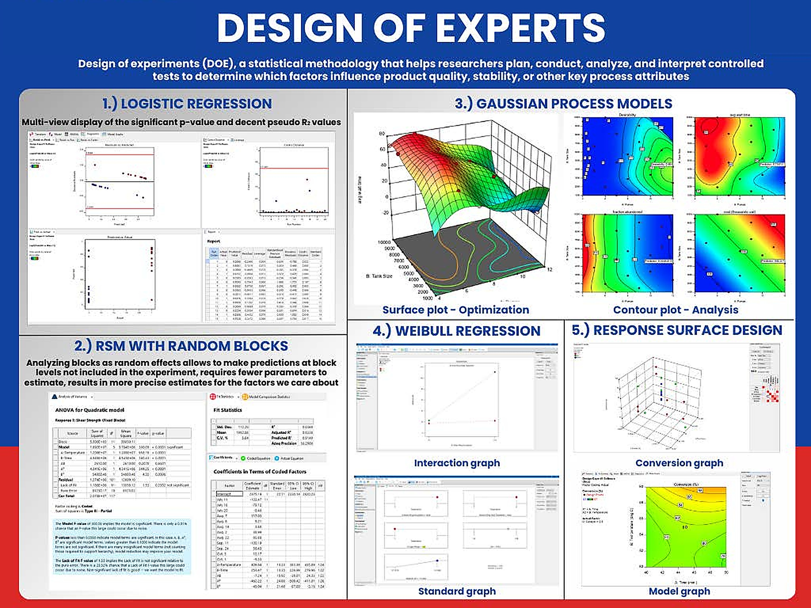
Enlarge posterThe panels are software outputs from the project's worked examples. They illustrate each method and are separate from the cellulase dataset analysed in sections 6 and 7.
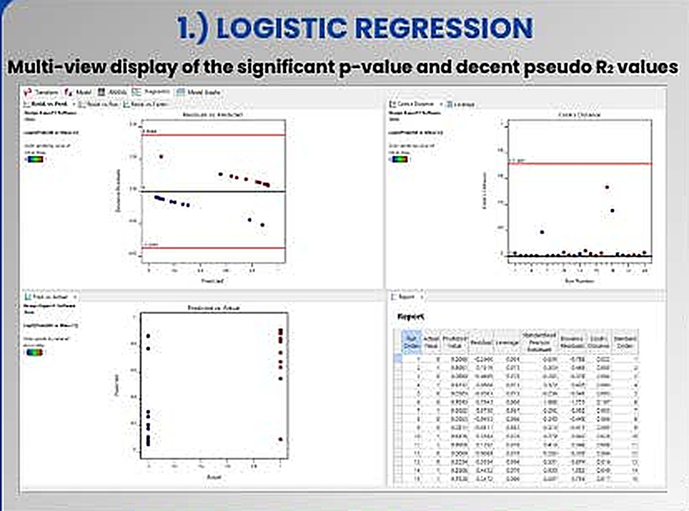
Modelling pass or fail
When the response is binary (growth or no growth, specification met or missed), a linear model can predict impossible probabilities. Logistic regression models the log-odds as linear in the factors and is fitted by maximum likelihood.
Factor significance comes from likelihood-ratio χ² tests. Because ordinary R² does not exist, fit is summarized by a pseudo-R², commonly McFadden's, 1 − ln Lmodel / ln Lnull; values of 0.2 to 0.4 are conventionally read as a very good fit [15,16]. The poster pairs the significant p-values with decent pseudo-R² values, then checks residuals against predicted values, Cook's distance by run order against a threshold line [22], and actual against predicted.
In a bioprocess study. Contamination outcomes, spore germination, or whether a hydrolysis run exceeds a target yield.
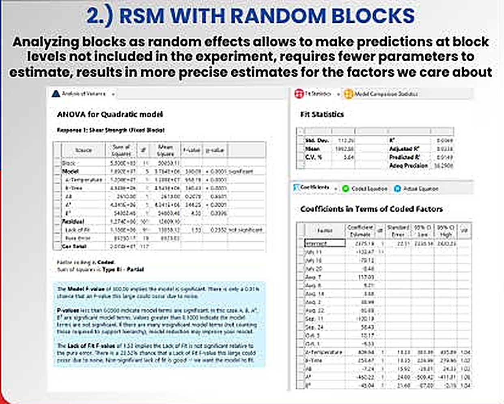
When runs come in batches
Experiments are often split into blocks such as days, operators or inoculum batches. Treating blocks as random effects assumes the batches in the study are a sample from a wider population of batches.
The poster states the practical advantages: predictions can be made at block levels not included in the experiment, only one variance component has to be estimated instead of one coefficient per extra block, and estimates for the factors of interest become more precise [17]. Variance components are estimated by restricted maximum likelihood (REML), which also recovers information between blocks when the blocks are incomplete.
In a bioprocess study. Flask-to-flask and batch-to-batch variation in inoculum or substrate lot, separated from the factor effects.
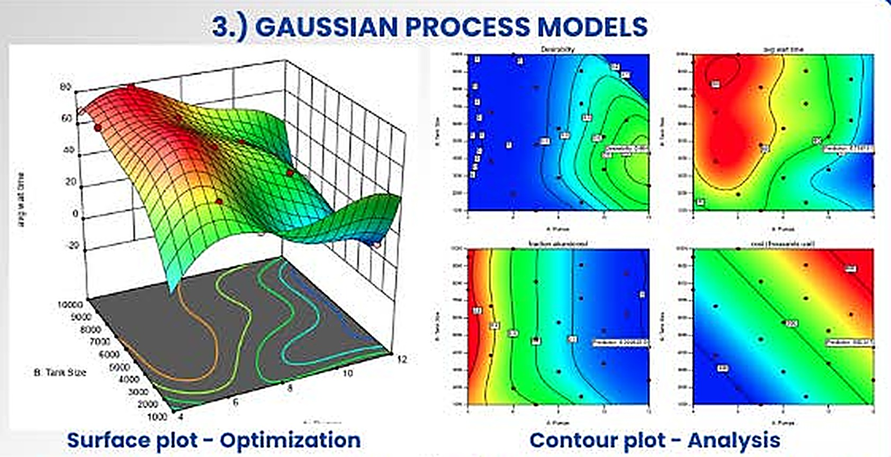
Letting the data draw the surface
A Gaussian process places a prior directly on the unknown response function instead of assuming a polynomial. A kernel states that nearby settings should give similar responses, and the posterior mean passes through, or close to, the observed points [12,13].
Each θj acts as a sensitivity: a large value means the response changes quickly along that factor. The prediction variance gives uncertainty bands, which makes the method natural for sequential optimization. The poster's example shows several responses over two factors, with a desirability function [20] combining them, a surface plot for optimization and contour plots for analysis.
In a bioprocess study. A check on whether the saddle shape in section 7 is real or an artefact of forcing a quadratic form onto 13 points.
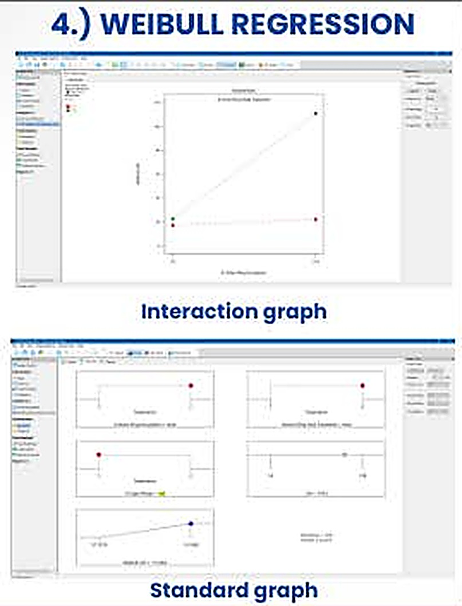
Modelling how long things take
For responses such as time to failure, time to germination or time to reach a threshold, a Weibull model describes the survival function and the hazard rate, and factors act on the scale parameter [14,23].
The shape β reads directly as a mechanism. With β < 1 the hazard falls with time (early failures), β = 1 gives a constant hazard (the exponential case), and β > 1 gives a rising hazard (wear-out). Runs that have not finished when observation stops are right-censored, and the likelihood uses them correctly instead of discarding them.
In a bioprocess study. Time for hydrolysis to reach a target conversion, or time to first visible sporulation, with unfinished flasks kept as censored data.
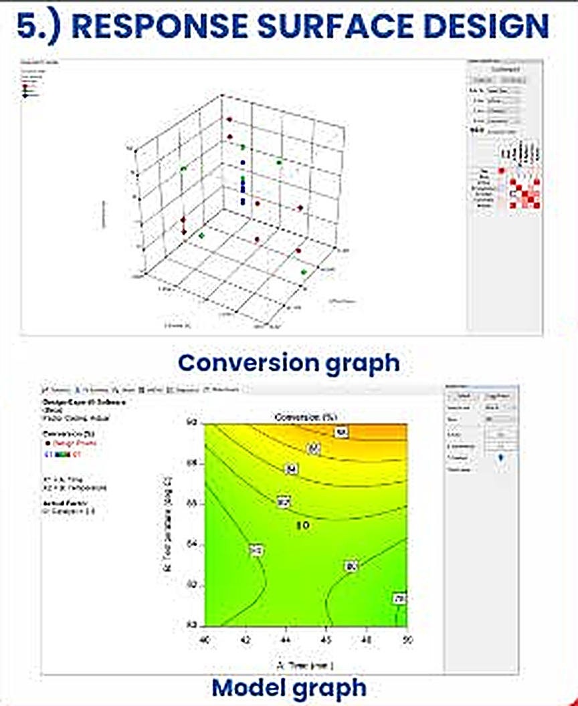
The workhorse of process optimization
Response surface design fits a second-order polynomial to a purpose-built design, a central composite or a Box–Behnken design [3,4,21], and searches the fitted surface for an optimum. The poster shows reaction conversion against two continuous factors as a three-dimensional graph and a contour map with design points overlaid.
This is the method that produced the cellulase surface in section 7. Its limits are the ones listed there: the polynomial form is an approximation valid only near the explored region, and the stationary point can be a saddle rather than an optimum.
In a bioprocess study. Both CCD stages of the cellulase project.
| Method | Response type | Key output | Main assumption |
|---|---|---|---|
| Logistic regression | Binary or proportion | Odds ratios, pseudo-R² | Log-odds linear in factors |
| RSM with random blocks | Continuous, grouped runs | Fixed effects, variance components | Blocks are a random sample |
| Gaussian process | Continuous, smooth | Surface with uncertainty | Smoothness set by the kernel |
| Weibull regression | Time to event, censored | Shape β, acceleration factors | Weibull-distributed event times |
| Response surface (CCD) | Continuous | Quadratic surface, optimum | Second-order approximation |
Section 11 · Critical appraisal
What the data support, and what they do not
The study is a clean example of sequential experimental design, and its model statistics are strong. Reading the design tables closely also shows several points that limit how far the conclusions can be pushed.
Strengths
- An orthogonal screen and a rotatable CCD were matched to the question at each stage.
- The CCD model is well supported: R² 0.9878, adjusted 0.9792 and predicted 0.9136 agree closely, and the coefficient of variation is 2.2%.
- The model exposes a large interaction that one-factor-at-a-time work would have missed.
- The enzyme was tested in two independent applications, which shows the process output is useful beyond a titre number.
Where to be careful
- No separate confirmation run is described, so predicted R² is a leave-one-out measure, not external validation.
- Only one strain, one substrate and 2 g flasks were studied.
- Only CMCase activity was reported, with no filter-paper activity or β-glucosidase assay.
- The saccharification model in [1] is first order, so curvature in that system is untested.
Findings from re-analysing the design tables
1. The best condition sits on the edge of the design
The highest response (9.00 U/mL at 8 g and 12 days) is a corner of the factorial square, so the true optimum may lie beyond it. The model's predicted maximum inside the design region is also on its boundary (section 7.3). A short run of steepest-ascent experiments past that corner, followed by a smaller second CCD, is the standard next step [3].
2. The surface is a saddle, which opens a cheaper operating point
Because the stationary point is a saddle, there are two good regions rather than one. The table compares them using values from the design.
| Condition | Substrate | Time | Cellulase (U/mL) | Per day (U/mL/d) | Per gram (U/mL/g) |
|---|---|---|---|---|---|
| High-high corner (run 10) | 8 g | 12 d | 9.00 | 0.75 | 1.13 |
| Low-low corner (run 8) | 4 g | 7 d | 7.85 | 1.12 | 1.96 |
The low-low corner gives 87% of the peak titre in 58% of the time with half the substrate. Which is better depends on whether titre, throughput or raw-material cost is the objective, and a desirability function [20] is the tool for stating that trade-off formally.
3. Replicated centre points have zero variance
All five centre-point runs are tabulated at 6.85 U/mL, so the pure-error sum of squares is exactly zero and the lack-of-fit F-test cannot be formed. Either the replicates agreed to two decimals or the tabulated values are means. Reporting the individual replicate readings would restore a model-free estimate of experimental noise.
4. Selection inflates the screening p-values
In the Plackett–Burman analysis, terms were retained after inspecting the data and the residual then used for testing has only 4 degrees of freedom. The reduced-model p-values are therefore optimistic, which is why the Bonferroni limit, not the p-value, is the safer yardstick for the screen.
5. The unit basis of the saccharification response
A reducing-sugar value of 338.18 mg/mL is high for a hydrolysate, and many studies express yield per gram of substrate. When this result is reused, the basis of the calculation (per mL of reaction mixture, filtrate or substrate) should be stated, and it determines how the negative filtrate coefficient is interpreted.
Next experiments
- Confirmation runs at the predicted optimum and at the low-low alternative, in triplicate, to give an external check on the model.
- Steepest ascent from the high-high corner, then a second CCD or a Box–Behnken design [21] centred on the new region.
- A multi-response desirability optimization over titre, time and substrate use.
- Block terms for inoculum batch and substrate lot, analysed as random effects (section 10).
- A Gaussian-process fit to the 13 CCD points to test whether the saddle survives a non-polynomial model.
- Saccharification with filtrate dosed per gram of substrate, separating dilution from enzyme loading and from product inhibition.
- Scale-up in tray or packed-bed bioreactors, where heat removal becomes the limiting variable, and a cost per unit of enzyme.
Section 12 · Reproducibility
Reported versus recomputed
Every number in the interactive panels is computed in your browser by ordinary least squares from the design tables printed in [1]. The table compares those results with the values published in the source article and in the project report. Small differences in the CCD come from the published responses being rounded to two decimals.
| Quantity | Published | Recomputed here | Difference |
|---|
The CCD coefficients recomputed here reproduce the published equation ŷ = 6.85 + 0.81A − 0.40B + 1.34AB + 0.11A² + 0.21B² to two decimals.
Software and conventions
- Linear models are fitted with the normal equations solved by Gauss–Jordan elimination. p-values use the regularized incomplete beta function for the F and t distributions.
- Predicted R² uses leave-one-out PRESS residuals from the hat matrix. Studentized residuals are internally studentized.
- The Pareto limits use the t quantile at the error degrees of freedom of the selected model, with α = 0.05 and a Bonferroni divisor of 11.
- The 3-D surface is drawn on a 28 × 28 mesh with painter's-algorithm shading. The contour map uses marching squares on a 60 × 60 grid.
Section 13 · Glossary
Terms and abbreviations
- ANOVA
- Analysis of variance, partitioning total variation into model and residual parts.
- CCD
- Central composite design: factorial, axial and centre points for fitting quadratic models.
- CMCase
- Carboxymethyl-cellulase, the endoglucanase activity measured on CMC.
- CV
- Coefficient of variation, root mean square error as a percentage of the mean response.
- DOE
- Design of experiments, planning runs so effects can be estimated efficiently.
- GP
- Gaussian process, a probabilistic model over functions defined by a kernel.
- K/S
- Kubelka–Munk colour strength, proportional to dye concentration in fabric.
- Leverage
- Diagonal of the hat matrix, how far a run's settings lie from the centre of the design.
- MS / PP
- Molokhia stem and pea peel, the fermentation and saccharification substrates.
- OFAT
- One factor at a time, the approach that designed experiments replace.
- PBD
- Plackett–Burman design, a two-level screening design.
- PRESS
- Predicted residual error sum of squares, from leave-one-out residuals.
- REML
- Restricted maximum likelihood, the standard way to estimate variance components.
- RSM
- Response surface methodology, fitting and exploring a fitted polynomial surface.
- Rotatable
- A design whose prediction variance depends only on distance from the centre.
- SSF
- Solid-state fermentation, microbial growth on a moist solid with little free water.
Section 14 · References
References
- Aspergillus awamori MK788209 cellulase: production, statistical optimization, pea peels saccharification and textile applications. Microbial Cell Factories 23:11 (2024). Open access. doi:10.1186/s12934-023-02286-w
- Plackett RL, Burman JP (1946) The design of optimum multifactorial experiments. Biometrika 33:305–325.
- Box GEP, Wilson KB (1951) On the experimental attainment of optimum conditions. J R Stat Soc B 13:1–45.
- Box GEP, Hunter JS (1957) Multi-factor experimental designs for exploring response surfaces. Ann Math Stat 28:195–241.
- Myers RH, Montgomery DC, Anderson-Cook CM (2016) Response Surface Methodology, 4th ed. Wiley.
- Montgomery DC (2017) Design and Analysis of Experiments, 9th ed. Wiley.
- Ghose TK (1987) Measurement of cellulase activities. Pure Appl Chem 59:257–268.
- Somogyi M (1952) Notes on sugar determination. J Biol Chem 195:19–23.
- Nelson N (1944) A photometric adaptation of the Somogyi method for the determination of glucose. J Biol Chem 153:375–380.
- Lynd LR, Weimer PJ, van Zyl WH, Pretorius IS (2002) Microbial cellulose utilization: fundamentals and biotechnology. Microbiol Mol Biol Rev 66:506–577.
- Pandey A (2003) Solid-state fermentation. Biochem Eng J 13:81–84.
- Sacks J, Welch WJ, Mitchell TJ, Wynn HP (1989) Design and analysis of computer experiments. Stat Sci 4:409–423.
- Rasmussen CE, Williams CKI (2006) Gaussian Processes for Machine Learning. MIT Press.
- Weibull W (1951) A statistical distribution function of wide applicability. J Appl Mech 18:293–297.
- Hosmer DW, Lemeshow S, Sturdivant RX (2013) Applied Logistic Regression, 3rd ed. Wiley.
- McFadden D (1974) Conditional logit analysis of qualitative choice behavior. In: Zarembka P (ed) Frontiers in Econometrics. Academic Press, 105–142.
- Pinheiro JC, Bates DM (2000) Mixed-Effects Models in S and S-PLUS. Springer.
- Kubelka P, Munk F (1931) Ein Beitrag zur Optik der Farbanstriche. Z Tech Phys 12:593–601.
- Lenth RV (1989) Quick and easy analysis of unreplicated factorials. Technometrics 31:469–473.
- Derringer G, Suich R (1980) Simultaneous optimization of several response variables. J Qual Technol 12:214–219.
- Box GEP, Behnken DW (1960) Some new three level designs for the study of quantitative variables. Technometrics 2:455–475.
- Cook RD (1977) Detection of influential observation in linear regression. Technometrics 19:15–18.
- Meeker WQ, Escobar LA (1998) Statistical Methods for Reliability Data. Wiley.
- Marler RT, Arora JS (2004) Survey of multi-objective optimization methods for engineering. Struct Multidisc Optim 26:369–395.
- Morris TP, White IR, Crowther MJ (2019) Using simulation studies to evaluate statistical methods. Stat Med 38:2074–2102.
Section 15 · Contact
Contact
harshinisuresha7@gmail.com
Open in mail app